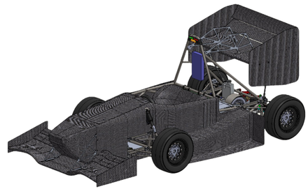
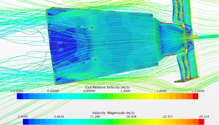
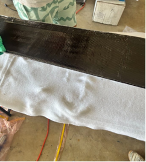

Initial design
SolidWorks undertray geometry; investigate flow near the throat and diffuser.
Project 01 / Vehicle aerodynamics / composites
From underbody flow to composite fabrication.

Designed and optimized a carbon-fiber aerodynamic undertray for Anteater Electric Racing. The project connected CAD geometry, CFD evaluation, flow-driven design iteration, and hands-on composite manufacturing.
Target approximately 40 N of downforce using ground effect while improving flow behavior through the throat and diffuser.
As an Aerodynamics Engineer, I created SolidWorks geometry, evaluated underbody flow in STAR-CCM+, iterated diffuser geometry and strake design, worked with composite manufacturing, and documented design and manufacturing findings for future iterations.
CAD, analysis, fabrication, and testing documentation.


The design process linked CAD updates to CFD flow diagnostics. I investigated crossflow and flow separation near the throat and diffuser, then used those observations to guide diffuser and strake iterations.
SolidWorks undertray geometry; investigate flow near the throat and diffuser.
Evaluate pressure coefficient, velocity, streamlines, crossflow, and separation.
Iterate diffuser geometry and strakes; achieve the target downforce.
Created the undertray geometry in SolidWorks and iterated diffuser geometry and strake design to improve flow behavior.
[ADD DESIGN DESCRIPTION: explain the specific geometry changes and the constraints behind them.]
Used STAR-CCM+ to evaluate pressure coefficient, velocity, streamlines, separation, and underbody flow. The target downforce was achieved.
[ADD ANALYSIS DETAILS: operating speed, ride height, boundary conditions, mesh settings, convergence, and force-report evidence.]
Worked with carbon-fiber composite manufacturing, including wet layup, vacuum bagging, mold finishing, resin control, laminate orientation, peel ply, breather, and composite tooling. Experience also included foam and honeycomb core structures.
[ADD MANUFACTURING DETAILS: the actual layup schedule, tooling sequence, and your contribution to each operation.]
Iterated the design using CFD observations of crossflow and separation.
[ADD TESTING DETAILS: physical test method, mounting verification, instrumentation, and measured results if available. Physical downforce validation has not been supplied.]
Crossflow and separation near the throat and diffuser were key flow behaviors to investigate. Diffuser geometry and strake changes provided the basis for design iteration.
[ADD CHALLENGE: describe a specific iteration, its tradeoff, and the evidence that informed the decision.]
Achieved the approximately 40 N downforce target and documented design and manufacturing findings for future iterations.
[ADD RESULTS CONTEXT: identify the operating conditions and distinguish CFD predictions from physical measurements.]
[ADD WHAT I LEARNED: describe how flow diagnostics changed your design decisions, how composite fabrication affected the geometry or tooling, and what you would improve next.]